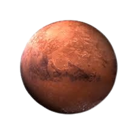

Розмір та орбіта
Марс приблизно вдвічі менший за Землю за діаметром, але його поверхня майже така ж велика, як суходіл Землі. Він розміщений у середньому на відстані 228 мільйонів кілометрів від Сонця, тобто приблизно в 1,5 раза далі, ніж Земля. Один оберт навколо Сонця триває майже 687 земних днів, а один марсіанський день - близько 24 годин 39 хвилин.
На головну!
